28/07/2018 — OMI trước viện được một nhân viên cấp cứu ngoài viện tuyệt vời nhận ra ngay lập tức
Bản dịch tiếng Việt của bài "Prehospital OMI recognized immediately by a fantastic paramedic" – Dr. Smith’s ECG Blog. Giữ nguyên toàn bộ 13 hình ảnh của bản gốc.
Bài viết của Pendell Meyers, Steve Smith biên tập
Ca bệnh này được gửi đến bởi một nhân viên cấp cứu ngoài viện (paramedic) muốn giấu tên.
“Ca bệnh kèm theo đây đã có kết cục tốt đẹp, và tôi hoàn toàn nhờ vào các bài hướng dẫn điện tâm đồ tuyệt vời trên trang web của các anh.”
“Một phụ nữ 65 tuổi được phát hiện trong tình trạng khó chịu, da lạnh ẩm, và than đau ngực. Tiền sử tăng huyết áp (HTN) và cholesterol cao. Bà đã tự dùng aspirin trước khi đội cấp cứu ngoài viện (EMS) đến.”
Đây là điện tâm đồ 12 chuyển đạo đầu tiên do EMS ghi cho bà:

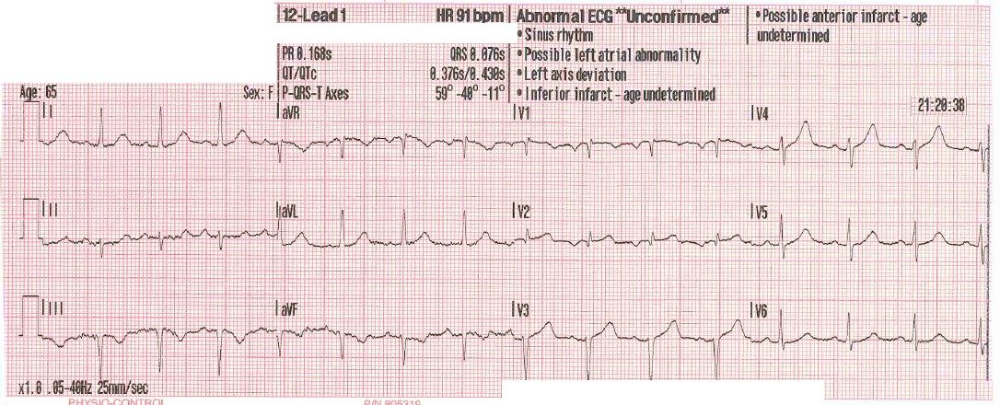
“Điện tâm đồ 12 chuyển đạo số 1 (21:20:38) – V4 lọt vào mắt tôi như một sóng T tối cấp, gợi ý tắc hoàn toàn hoặc ít nhất là tắc gần hoàn toàn. Và các thay đổi ST/T ở III và aVF đã củng cố mối nghi ngờ. Tôi bảo nhân viên cấp trên có mặt bắt đầu kích hoạt báo động STEMI.”
Bình luận của Meyers: Đây là một diễn giải xuất sắc, phản ánh nhiều năm thực hành nhận diện sóng T tối cấp (hyperacute T wave) so với các biến thể bình thường. Tôi đồng ý rằng V4 rất đáng nghi là tối cấp, điều này trước hết khiến tôi nhìn sang các chuyển đạo lân cận để xem chúng có xác nhận nhận định này hay không. Có ST chênh lên (STE) rất nhẹ ở V2-V4, mà thoạt nhìn có thể bị cho là biến thể bình thường. Tuy nhiên, nếu là biến thể bình thường thì phải có tăng tiến sóng R tốt. Thay vào đó, tăng tiến sóng R rất kém với các sóng R nhỏ xíu ở V2-V4, mà (theo công thức) đây là một trong những yếu tố quan trọng nhất và sẽ cho điểm rất cao trên các công thức phân biệt OMI thành trước kín đáo với tái cực sớm lành tính (BER).
Sóng T ở V3 có thể không phải tối cấp khi xét riêng lẻ; tuy nhiên, khi xét trong bối cảnh của V4, tôi cũng coi sóng này là đáng nghi sóng T tối cấp. V2 có một chút ST chênh lên không phù hợp với QRS của nó, cũng như có thể có một sóng Q rất nhỏ mà trong tình huống này phải được giả định là mới xuất hiện, vì không có điện tâm đồ cũ để đối chiếu.
Ngoài ra, về mặt kỹ thuật chuyển đạo V2 có biến dạng phần cuối QRS (terminal QRS distortion), vì không có sóng S (không bao giờ đi trở xuống dưới đường nền) và cũng không có sóng J. Tôi không hoàn toàn bị thuyết phục bởi các dấu hiệu soi gương ở thành dưới, nhưng có thể chúng sẽ thuyết phục nếu được so sánh với một điện tâm đồ cũ, nếu có.
Do có thể có thay đổi soi gương, có sóng Q, và có biến dạng phần cuối QRS ở V2, các công thức chính thức bị chống chỉ định. Ngoài ra, về mặt kỹ thuật, công thức đòi hỏi ST chênh lên ít nhất 1mm ở V2-V4 mới được xem xét sử dụng.
Vì vậy, dù công thức không nên được áp dụng trong ca này, tôi vẫn sẽ áp dụng để cho thấy sóng R giảm và biên độ QRS thấp quan trọng sâu sắc đến mức nào:

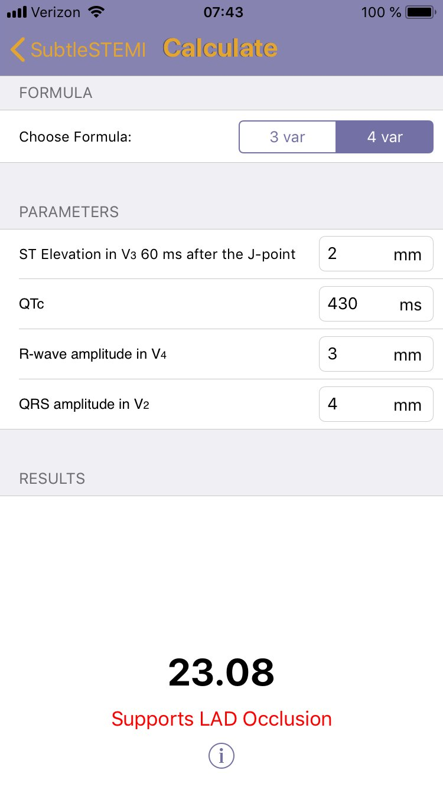
Hai phút sau, nhân viên cấp cứu ngoài viện ghi thêm một điện tâm đồ khác:

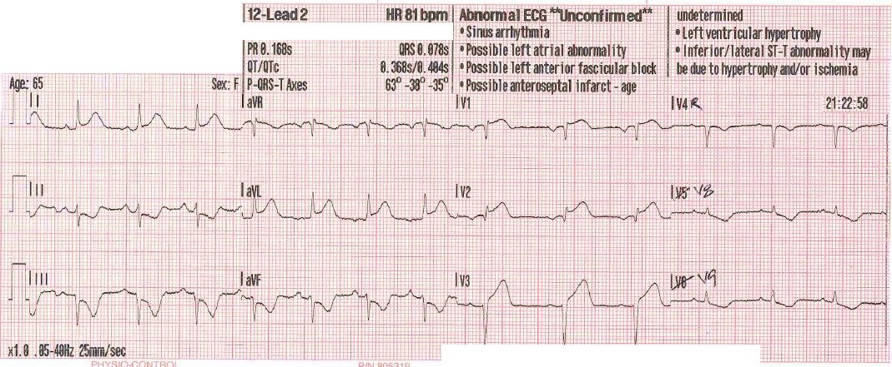
“Điện tâm đồ 12 chuyển đạo số 2 (21:22:58) – về mặt kỹ thuật là điện tâm đồ 15 chuyển đạo, chỉ vừa đúng hai phút sau, nay cho thấy STEMI không còn gì phải bàn cãi.”
Thêm ba điện tâm đồ nữa được ghi trên đường đến trung tâm thông tim:

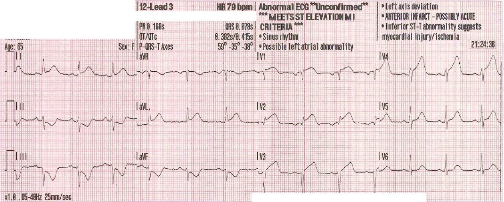

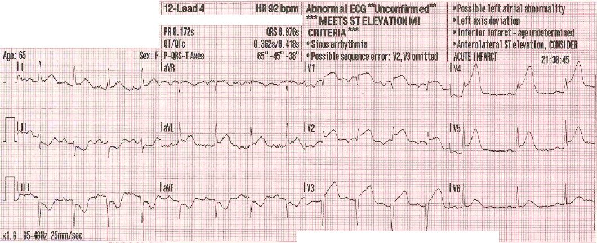

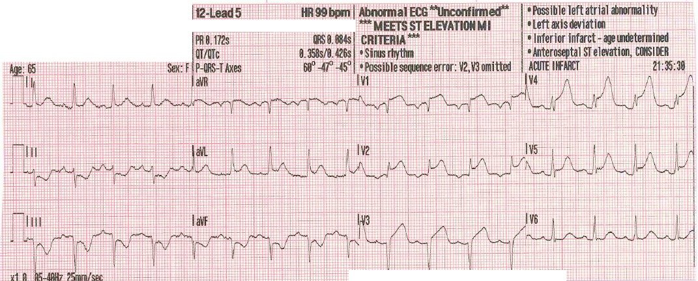
“Điện tâm đồ 12 chuyển đạo số 3, 4 và 5 – đặt điện cực theo vị trí chuẩn – được ghi trên đường đến cơ sở có phòng thông tim.”
Đây là điện tâm đồ của bệnh nhân khi đến khoa cấp cứu (ED) của cơ sở có phòng thông tim:

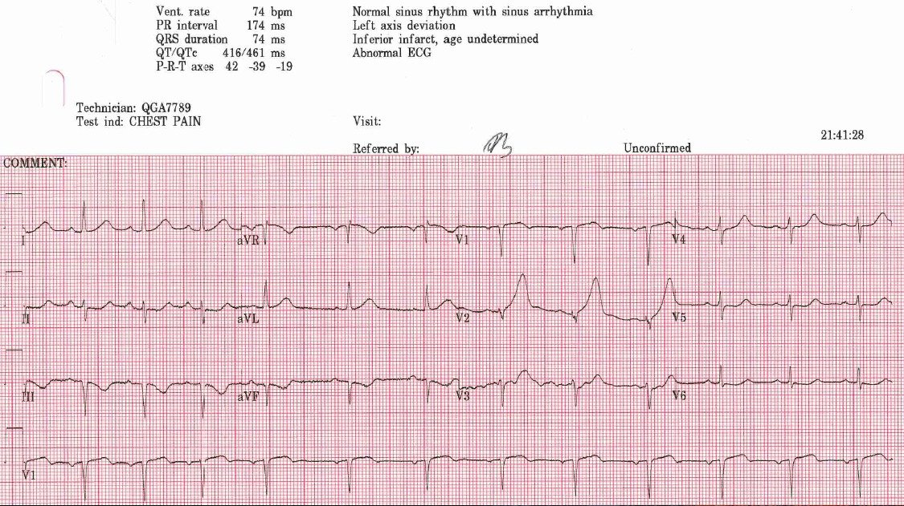
“Tuy nhiên, khi đến nơi, bác sĩ khoa cấp cứu tiếp nhận không mấy ấn tượng với các dấu hiệu trên tất cả các điện tâm đồ trước viện. Điện tâm đồ đầu tiên tại bệnh viện (21:41:28) vẫn có hình ảnh bệnh lý của OMI, nhưng bác sĩ chỉ nói “thiếu máu cục bộ.”
Chín phút sau, một điện tâm đồ khác được ghi:

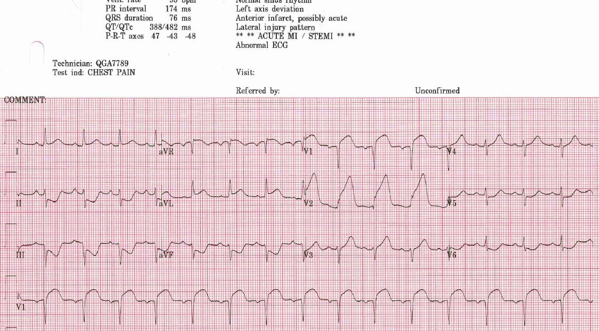
“Điện tâm đồ thứ hai tại bệnh viện (21:50:58) được ghi ngay trước khi bệnh nhân bị ngừng tim do rung thất (VF). Bác sĩ đã mời hội chẩn tim mạch, và bệnh nhân được đưa đi thông tim. Đây là báo cáo:
…Một phụ nữ 65 tuổi. Bà bị ngừng tim do rung thất và đã chuyển nhịp sau 1 cú sốc. Chúng tôi phát hiện tắc gần hoàn toàn LAD đoạn giữa tại chỗ chia đôi với một nhánh chéo lớn. Dây dẫn đi qua cục huyết khối mềm hiện diện tại đó và tiến hành nong bóng, sau đó đặt 2 stent phủ thuốc (DES) ở LAD và 1 stent ở nhánh chéo. Việc đặt stent nhánh chéo dựa trên hình ảnh sau đặt stent cho thấy mạch này gần như bị đóng lại, và xét kích thước cũng như vùng chi phối rộng của nó, stent đã được đặt cẩn thận vào nhánh chéo. Thời gian từ kích hoạt phòng thông tim đến bóng = 53 phút.
Đây là hình chụp mạch vành trước can thiệp:

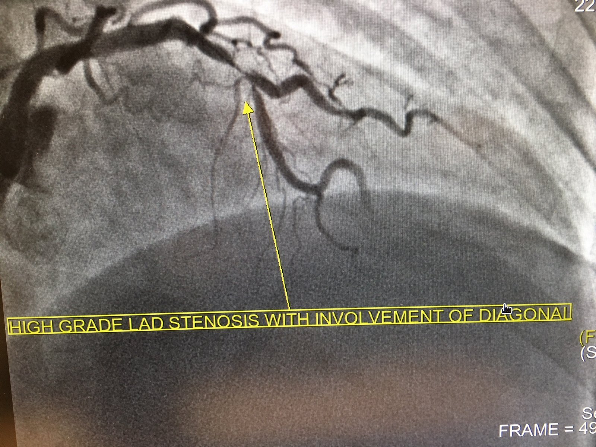
Và sau can thiệp:

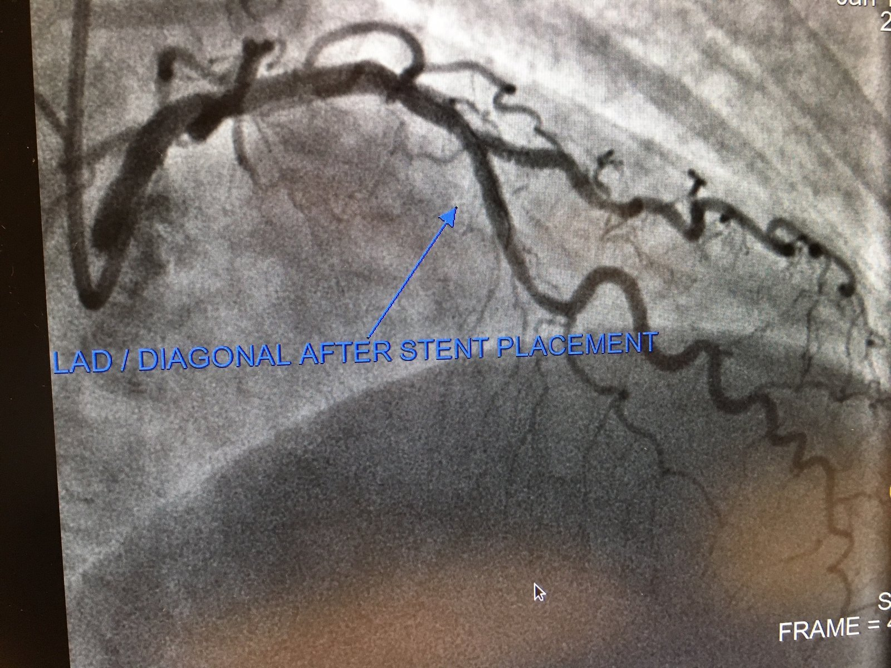
Những điểm cần học:
Với những ai trong chúng ta (như nhân viên cấp cứu ngoài viện tuyệt vời này) quan tâm đến việc chẩn đoán OMI càng sớm càng tốt, cần phải học cách nhận ra các dấu hiệu kín đáo như những dấu hiệu đã được nhận thấy trên điện tâm đồ đầu tiên. Trong một số ca như ca này, mọi thứ sẽ trở nên rõ ràng trong vài phút, nhưng ở các ca khác thì sẽ không diễn ra nhanh như vậy, hoặc bạn sẽ không có thêm điện tâm đồ nào khác. Cho đến khi nghiên cứu chứng minh điều ngược lại, không thể chấp nhận việc bỏ qua kiến thức này và nói “Tôi cứ chờ cho đến khi nó biến thành STEMI thật sự.” Đây là cơ hội để cứu cơ tim!
Các điện tâm đồ liên tiếp biến bác sĩ kém thành bác sĩ giỏi, và bác sĩ giỏi thành bác sĩ xuất sắc.
Ngoài sóng T tối cấp và độ lệch đoạn ST, hãy nhớ tìm sóng Q, biến dạng phần cuối QRS, biên độ sóng R giảm, v.v.

———————————————————–
Bình luận của KEN GRAUER, MD (28/7/2018):
———————————————————–
Bàn luận xuất sắc của Dr. Meyers & Dr. Smith về ca bệnh được gửi ẩn danh này, của một phụ nữ 65 tuổi đến khám vì đau ngực mới xuất hiện. Các bản ghi liên tiếp và kết quả thông tim đã được Dr. Meyers & Dr. Smith bàn luận đầy đủ ở trên. Tôi sẽ giới hạn bình luận của mình ở điện tâm đồ ban đầu — mà để cho rõ, tôi đã đưa lại ở Hình 1.
- Xin ghi công cho nhân viên cấp cứu ngoài viện đã nhận ra các dấu hiệu điện tâm đồ gợi ý mạnh OMI trên điện tâm đồ ban đầu này ở Hình 1 — dù bác sĩ khoa cấp cứu tiếp nhận thì không. Trong những ca như thế này, khi có khác biệt quan điểm về việc diễn giải một bản ghi — tôi thấy hữu ích khi tập trung vào TẤT CẢ các đặc điểm ủng hộ kết luận của chúng ta rằng điện tâm đồ này thể hiện OMI cấp đang tiến triển cho đến khi chứng minh được điều ngược lại.
- Lý do sóng ST-T ở chuyển đạo V4 “lọt vào mắt nhân viên cấp cứu” — là vì kích thước của sóng T này cao không tương xứng (cũng như “phình to”-ở-đỉnh-hơn-dự-kiến) so với kích thước QRS khiêm tốn ở chuyển đạo này. Sóng T đảo ngược ở chuyển đạo III và aVF cũng lọt vào mắt nhân viên cấp cứu.

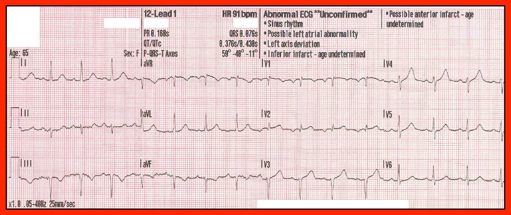
Hãy xem lại điện tâm đồ 12 chuyển đạo thứ 1 của EMS ở Hình 1. Bạn có thể nhận ra BAO NHIÊU dấu hiệu bất thường?
- Tôi tin rằng sóng T đảo ngược mà chúng ta thấy ở chuyển đạo III và aVF đúng là phản ánh thay đổi soi gương — vì chuyển đạo thành dưới thứ 3 ( = chuyển đạo II) cũng bất thường! Trong bối cảnh chúng ta nghi ngờ STEMI thành trước đang tiến triển cấp — “bậc thềm” nằm ngang mà chúng ta thấy ở đoạn ST trong chuyển đạo II rõ ràng là một dấu hiệu bất thường — và, sự ủng hộ cho tính xác thực của thay đổi soi gương luôn tăng lên khi nhiều chuyển đạo trong cùng một vùng giải phẫu cùng bất thường.
- Cần lưu ý rằng có phức bộ QS ở cả chuyển đạo III và aVF. Ý nghĩa của dấu hiệu này không chắc chắn. Có một sóng r nhỏ ở chuyển đạo II — vì vậy điều này gợi ý có LAHB. Nhưng thực sự không thể nói NẾU các phức bộ QS ở chuyển đạo III và aVF thể hiện thêm một nhồi máu thành dưới cũ, hay chỉ đơn thuần phản ánh trục lệch trái rõ rệt. Dù sao đi nữa, việc không có ST chênh lên ở thành dưới ít nhất cho chúng ta biết thành dưới không bị ảnh hưởng cấp tính.
- Như Dr. Meyers đã nêu — có ST chênh lên bất thường ở chuyển đạo V1 và V2. Nhưng ngoài ra — tôi rất nghi ngờ đặt sai vị trí điện cực (lead malposition) của V1 và V2 vì: i) có một thành phần âm rất sâu của sóng P ở chuyển đạo V1 và V2, rồi đột ngột trở thành dương đến chuyển đạo V3; và ii) Hình thái phức bộ QRS ở chuyển đạo V2 đơn giản là không hợp lý (tức là, đột ngột thay đổi từ phức bộ Qr chủ yếu âm ở V1 — sang phức bộ qR chủ yếu dương [dù rất nhỏ] ở V2 — rồi một lần nữa đột ngột trở thành chủ yếu âm với phức bộ rS đến chuyển đạo V3). Điều này CÓ liên quan rất lớn — vì các dấu hiệu ở Hình 1, vốn đã đủ kín đáo để một bác sĩ cấp cứu giàu kinh nghiệm bỏ sót — có lẽ đã bị giảm nhẹ thêm do đặt sai vị trí điện cực V1 và V2!
- LƯU Ý: Tôi xin nói thêm rằng trao đổi của tôi với đội EMS đã xác nhận rằng sau đó họ nhận ra điện cực V1 và V2 thực sự đã được đặt quá cao trên ngực! Và, khi chúng ta xem lại các điện tâm đồ liên tiếp ở trên — hãy lưu ý rằng chỉ đến điện tâm đồ thứ 6 = tức là điện tâm đồ thứ 1 ghi tại bệnh viện ( = điện tâm đồ ghi khi đến cơ sở thông tim) thì các sóng P âm rất sâu và QRS chủ yếu dương ở V2 mới biến mất — ủng hộ giả thiết của tôi rằng đã có đặt sai vị trí điện cực ở cả 5 bản ghi của EMS được trình bày ở trên. Rõ ràng — việc đặt sai vị trí điện cực này không làm thay đổi kết luận của chúng ta về OMI đang diễn ra — nhưng nó có thể là nguyên nhân khiến một số thay đổi trên điện tâm đồ thứ 1 (Hình 1) trở nên khó nhận ra hơn.
- Điều này đưa chúng ta đến việc đánh giá chuyển đạo V3 ở Hình 1. Vì chuyển đạo V2 bị đặt sai vị trí — nó không thực sự là một “chuyển đạo lân cận” của V3 … Dù vậy, xét việc có ít nhất 6 chuyển đạo có dấu hiệu ST-T bất thường (chuyển đạo II,III,aVF; V1,V2,V4) — sóng T ở chuyển đạo V3 cũng trông cao và phình-to-ở-đỉnh-hơn-mức-đáng-có một cách không tương xứng, so với sóng R nhỏ xíu ở V3.
BÌNH LUẬN: Trong số những sơ suất quan trọng nhất của bác sĩ khoa cấp cứu tiếp nhận, người đã không nhận ra các thay đổi có giá trị chẩn đoán OMI trên điện tâm đồ thứ 1 ở Hình 1 — là việc bỏ qua Bệnh sử = một phụ nữ 65 tuổi đã gọi EMS, da lạnh ẩm, trông rõ ràng là khó chịu, và có lý do chính đến khám là đau ngực mới khởi phát. Ngay cả trước khi chúng ta nhìn thấy điện tâm đồ thứ 1 — thông tin này cho chúng ta biết chúng ta đang đối mặt với khả năng có tỷ lệ hiện mắc cao của hội chứng vành cấp — điều này phải hạ thấp đáng kể ngưỡng lo ngại của bạn đối với các dấu hiệu điện tâm đồ bất thường.
- Ít nhất 7/12 chuyển đạo trên điện tâm đồ thứ 1 cho thấy các dấu hiệu đáng lo ngại, trong bối cảnh tình huống có tỷ lệ hiện mắc cao này. Điều đó là quá đủ để biện minh cho việc kích hoạt phòng thông tim (ngay cả khi không tính đến việc đặt sai vị trí điện cực).
- SUY NGHĨ CUỐI CÙNG: Hy vọng rằng đã có phản hồi mang tính xây dựng cho bác sĩ khoa cấp cứu. Chúng ta cần học hỏi từ điều này.